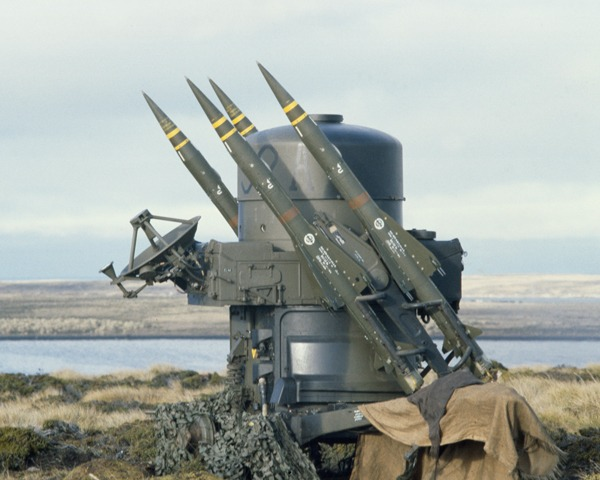
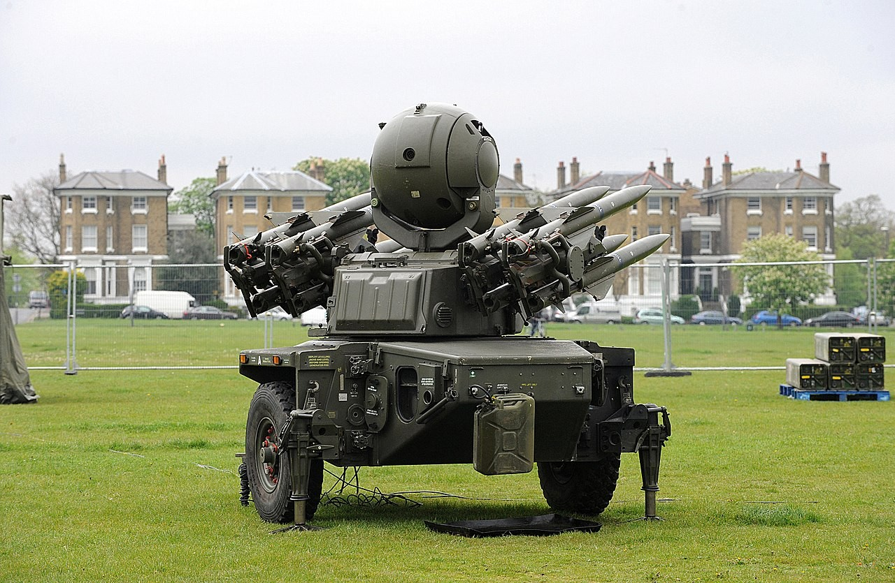
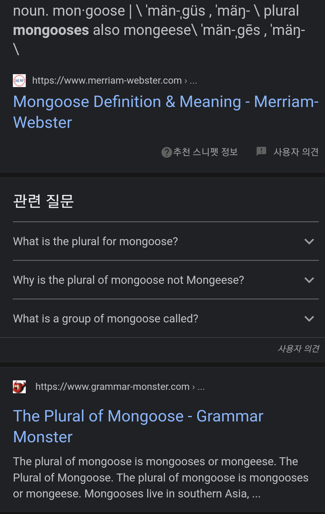
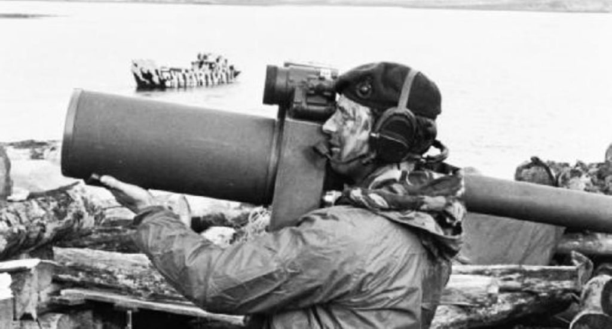
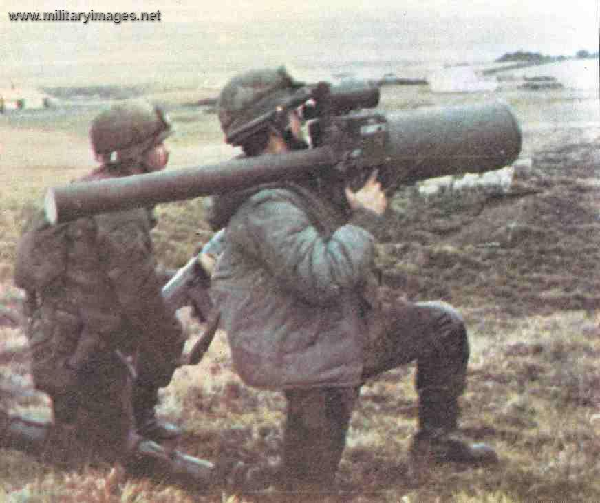
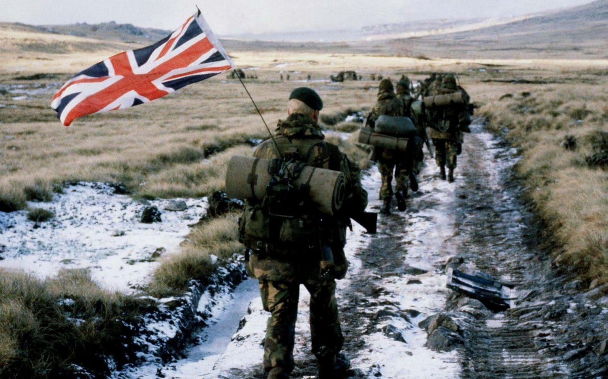
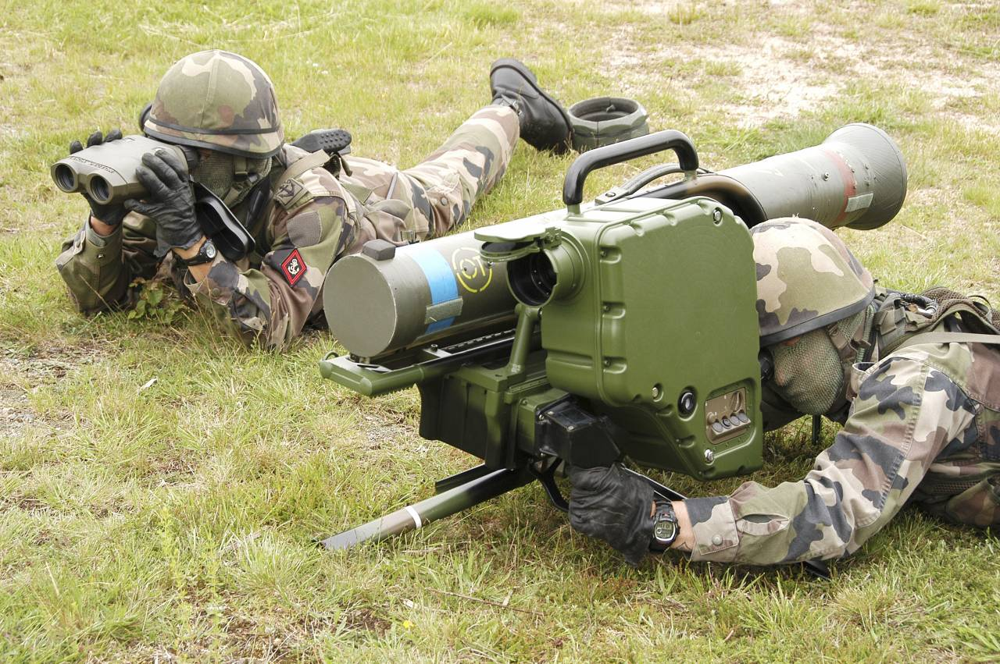
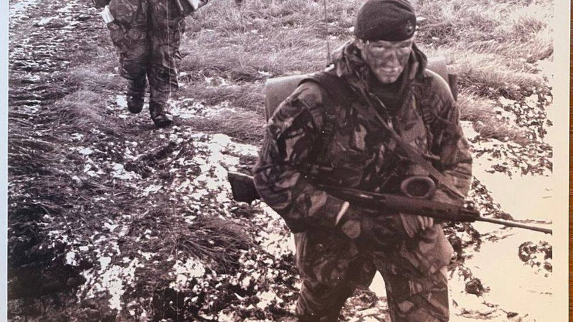

포클랜드 전쟁 잡담 - 영국 지상군의 대공 미사일
게시: 2022-04-28T06:30:39+09:00
<Miss-ile이 아니라 Hit-ile> 포클랜드 전쟁에서 영국 지상군이 사용한 Rapier 대공 미쓸은 원래 저공 침투하는 적 항공기를 요격하기 위해 저가형 단거리 대공 미쓸로 1960년대에 개발되어 70년대에 실전배치된 것. 저공 침투하는 적기를 요격하는 저가형이다보니 유도 방식은 의외로 간단. 즉, 적기가 날아오는 것을 레이더가 아닌 눈으로 보고 쏜 뒤, 카메라에 보이는 미사일과 목표물을 눈으로 보고 (비디오 게임처럼) 조이스틱을 이용해서 유도하는 것. 다만 목표물에 충분히 접근하면 그때부터는 미사일의 자체 radar를 이용하여 자동 유도되는 semi-active radar homing 방식.

그래서 발사대에는 아예 레이더를 달지 않는 것도 고려했으나, 아무리 저공 침투하는 적기라고 해도 눈만으로 찾는 것보다는 조기 경보용으로 레이더를 갖추는 것이 훨씬 더 도움이 된다는 의견이 많아서 결국 레이더를 갖춤. 단, 이건 어디까지나 '주변에 적기가 있는지 여부'를 감지하기 위한 용도일 뿐 조준용이 아님. 탱크나 헬기 같은 저속 목표물이면 모르겠으나 제트기를 요격하는 대공 미사일을 눈으로 보고 조이스틱으로 유도한다는 것이 과연 효과적일지에 대해 의문이 들지만, 적어도 초기 테스트에서는 이 방식이 너무나 효율적이라서 그야말로 백발백중이었다고. 그래서 개발진은 '이걸 Miss-ile이라고 불러서는 안된다, Hit-ile이라고 불러야 한다'라며 기고만장. 그러나 지들이 볼 시험 문제를 지들이 내는 방식의 평가는 역시 엉터리였는지, 실제 군 부대에서 실전 배치를 위해 평가를 해보니 조이스틱 유도 방식에 많은 문제가 발견되었고, 그걸 수정하느라고 엄청 애를 먹음. 1982년 포클랜드 전쟁에 영국 지상군은 이 미사일을 가지고 상륙. 휴대용은 아니었으므로 보병 부대와 함께 움직이지는 않았고, 산 카를로스 인근에 만든 해리어 전투기의 임시 이착륙장 및 급유 시설의 대공 방어용으로 고정 배치됨. 그 실적은? 매우 실망스러웠다고. 처음에는 이 미사일로 20대의 아르헨 공군기를 격추했다고 주장했으나, 전쟁이 끝나고 엄밀하게 평가를 해본 결과 확실히 레이피어가 격추한 것은 IAI Dagger 전투기 단 1대 뿐이었고, 어쩌면 다른 4대의 Skyhawk를 격추하는데 기여했을 것 같다는 평가를 받았음. 결국 Hit-ile이 아니라 Miss-ile이 맞았음. 하지만 여전히 영국군은 레이피어를 현역으로 사용 중이며, 2012년 런던 올림픽 때 대테러 방어용으로 경기장 근처에도 배치됨 (아래 사진). 곧 차세대 대공 미사일 Sky Sabre로 대체될 예정이라고.

<문과생들 때문에 미사일 이름이 바뀌다> 그런데 이 Rapier 대공 미사일의 원래 개발 당시 이름은 Mongoose. 근데 어느날 개발진들이 회의를 하다 몽구스의 복수형이 Mongooses인지 Mongeese인지 거기 모인 박사님들 중 아무도 아는 사람이 없다는 사실을 깨닫고 문과생들에게 무식하다는 소리를 들을까 두려워 황급히 Rapier로 이름을 바꿈. 근데 알고 보니 mongooses도 맞고 mongeese도 맞다고 ! 아, 지긋지긋한 문과놈들 !

<Rapier의 근본적인 단점?> 상식적으로 눈으로 보고 유도하는 방식인 레이피어는 근본적인 문제가 있음. 바로 야간에는 전혀 쓸 수 없다는 것. 뭐가 보여야 쏠 것 아닌가? 지구가 둥글기 때문에, 원래 레이더를 해전에서 처음 사용할 때의 장점도 눈으로는 보이지 않는 먼 적함을 포착하는 것이 아니라 밤에도 목표물의 방향과 거리를 포착할 수 있다는 것이었음. 그런데 포클랜드 전쟁과 같은 실전에서도 레이피어의 그런 근본적인 단점이 전혀 문제가 되지 않았음. 이유는? 당시 저공 침투하는 적기들도 야간에는 아무것도 안 보였기 때문에 저공 비행을 하지 않았음. 당시 아르헨티나와 스카이호크나 영국공군의 Harrier GR.3는 적외선 장치는 커녕 레이더도 없던 기종. 고공으로 비행하는 적기는 어차피 레이피어와 같은 단거리 대공 미사일의 사거리 밖. <MANPADS도 역시 영국제!> Rapier가 고정식 대공 미사일이라면, 이동하는 영국 보병들을 보호해줄 견착식 대공 미사일(보통 MANPADS라고 부름)은 없었을까? Blowpipe(사진)라는 것이 있었음. 그런데 이것도 악명 높은 영국 해군의 Sea Cat 대공 미쓸처럼 Manual command to line of sight (MCLOS) 유도방식. 즉, 눈으로 목표물과 날아가는 미사일을 보고 손으로 유도하는 것. 이걸로 헬리콥터 정도면 모를까 제트기를 맞추기를 기대하는 것은... 당시 영국 해병대 지휘관이었던 Julian Thompson 준장에 따르면 "하수도관으로 꿩 사냥을 하는 꼴".

다행인지 불행인지 아르헨티나 공군기들은 영국 지상군에 대한 공격을 거의 하지 않았고 영국 해군 선박들을 주로 공격. 그럼에도 불구하고 영국 보병들은 각종 헬리콥터나 프로펠러 공격기, 지나가는 아르헨티나 전투기 등에게 무려 95발의 블로우파이프를 난사. 그러나 영국제가 다 그렇지만, 발사된 95발 중 거의 절반 정도가 온갖 다양한 고장으로 목표물 근처까지 날아가는데 실패. 날아간 나머지 절반도 대개 빗나가서 처음에는 9대의 헬기와 프로펠러기 등을 격추했다고 평가. 그러나 나중에 엄밀히 평가를 해보니 아르헨티나군이 쓰던 제트 훈련기 딱 1대만 격추한 것으로 평가. 웃긴 것은 당시 아르헨티나 지상군도 영국제 무기 동호회 회원이라서 이 블로우파이프 미사일을 보유했고 (아래 사진), 실제로 사용. 아르헨티나군은 1대의 해리어 전투기를 이 블로우파이프로 격추했다고 주장했으나, 낙하산으로 탈출한 해리어 조종사는 자신이 미사일이 아니라 대공포에 맞았다고 증언.

<왜 아르헨티나 공군기들은 영국 지상군을 폭격하지 않았나?> 몇가지 이유가 있었는데, (1) 영국 군함이나 수송선은 찾기가 쉬웠는데 보병부대는 찾기가 어려웠음 (2) 아르헨티나 본토 리오 그란데 공군기지에서 날아오는 전투기들은 대부분 연료가 간당간당한 상태라서 상공에서 오래 머물면서 보병 부대를 찾을 시간이 없었음 (3) 어차피 영국 군함과 수송선을 격침시키면 영국 지상군은 보급 문제 때문에 끝장.
<해병이 사과한 이유> 사진은 Falkland 전쟁 당시 아르헨티나군의 근거지인 Port Stanley로 전진하는 영국 해병대의 모습으로 유명해진 사진. 당시 영국군은 여러가지 이유로 Port Stanley 근처에 상륙하지 않고 섬의 정반편인 San Carlos에 상륙했는데, 이는 서울 광화문에서 천안까지의 거리를 걸어서 가야한다는 뜻. 영국군의 이런 쾌속 강행군을 yomper라고 부르는데 지금도 구글에 yomper라고 검색하면 저 상징적인 사진이 많이 나옴.

근데 저 사진 속에서 유니언잭을 달고 가는 저 해병 Peter Robinson 상병은 원래 대전차 미쓸인 Milan 발사병. 1972년 프랑스-독일 합작으로 개발된 밀란은 이미 1978년부터 시리아에서도 사용하던 무기지만 가난한 영국군에서는 당시 최신형 장비라서 아는 사람이 거의 없었음. 영국 해병대는 포클랜드에 진지파괴용으로 들고감.

저 사진이 찍히기 3일 전, 로빈슨 상병은 Two Sisters 전투에서 무겁게 들고다니던 밀란 미쓸을 아르헨티나 기관총 진지를 향해 발사. 함께 싸우던 영국 육군은 그런 무기가 있다는 사실도 모르고 있었다가 갑자기 뭔가 쒹하고 날아가 적 진지를 격파하자 깜놀. 조금 있다가 로빈슨 상병이 소속된 해병팀의 무전기로 이런 무전이 날아옴. 'I don't know what that was, but could we have another one please?' (아까 그게 뭔진 모르겠지만, 한 방 더 쏴주지 않겠나?) 그러나 로빈슨 상병이 유명해진 건 밀란 미쓸 때문이 아니라 저 유니언잭을 꽂은 사진 때문. 저 유니언잭은 그냥 누가 들고 있던 거라서 꽂은 것 뿐이었고, 저게 유명해질지 몰라서 도중에 그냥 버렸다고. 나중에 해병대에 들어온 신병들이 굳이 로빈슨 상병을 찾아와 '제가 해병이 된 건 당신의 그 사진을 봤기 때문'이라고 말하는 경우가 많았고, 그때마다 로빈슨 상병은 진심으로 사과를 했다고.

(로빈슨 상병의 앞모습)
이렇게 말하고 보면 꽤 유쾌한 사건 같지만, 많은 전우들이 전투 후유증으로 PTSD를 겪었고 적지 않은 숫자가 자살 또는 자살미수. 로빈슨도 후유증을 겪었으나 이젠 잊고 지낸다고.